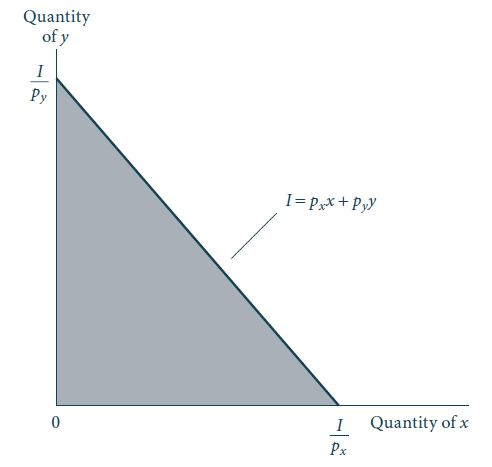

Restrição Orçamentária
Microeconomia I (23MIC1)
Introdução à Teoria do Consumidor
- Na primeira parte do curso estudaremos o comportamento dos consumidores.
- O problema de um consumidor típico é definido como a maximização de seu bem-estar (utilidade), dadas as restrições que a escassez impõe sobre suas escolhas.
- Dois objetos são fundamentais para especificar o problema do consumidor:
- As preferências do consumidor - servem para definir sua utilidade ou bem-estar.
- A restrição orçamentária - representa as restrições impostas pela escassez sobre esse consumidor.
- As preferências do consumidor - servem para definir sua utilidade ou bem-estar.
Introdução à Teoria do Consumidor
- As restrições impostas pela escassez são facilmente observáveis.
- Se alguma mudança no comportamento do consumidor foi causada por alterações na sua restrição orçamentária, obtemos uma explicação objetiva e clara para essa mudança de comportamento.
- Nesta aula estudaremos as restrições que o consumidor enfrenta quando maximiza sua função utilidade e que implicações sobre seu comportamento podemos derivar usando apenas as restrições de escassez.
Restrição Orçamentária
- A restrição orçamentária representa a escassez no problema do consumidor.
- Cada consumidor dispõe de uma certa quantidade de dinheiro para dispender em um determinado período do tempo.
- O consumidor escolhe quais bens consumir e o quanto consumir de acordo com suas preferências, mas o valor total dos bens não pode ultrapassar sua renda.
Restrição Orçamentária
Vamos assumir que existam \(n\) bens nessa economia, representados por \(x_1, x_2, \dots, x_n\).
Vamos supor, ainda, que os respectivos preços destes bens são dados por \(p_1, p_2, \dots, p_n\).
Por hipótse, os consumidores são tomadores de preços. Ou seja, os preços são fixos para estes consumidores e eles não podem alterá-los (existem modelos que relaxam essa hipótese).
A renda do consumidor é denotada por \(I\), e é exógena às ações do consumidor.
Ou seja, o consumidor não consegue alterar sua própria renda. Essa hipótese não é adequada se queremos estudar, por exemplo, a oferta de trabalho dos indivíduos. Nesse caso, a renda é endógena: a renda depende da decisão dos indivíduos acerca do quanto e onde trabalhar. Mais à frente no curso analisaremos esse caso.
Restrição e reta orçamentárias
Restrição orçamentária
A restrição orçamentária de um consumidor pode, então, ser escrita como:
\[p_1 x_1 + p_2 x_2 + \dots + p_n x_n \leq I.\]
Ou seja, o consumidor não pode gastar mais do que sua renda.
A reta orçamentária é o conjunto de cestas de bens que custa exatamente \(I\): \[p_1 x_1 + p_2 x_2 + \dots + p_n x_n = I. \qquad(1)\]
Reta orçamentária
- A expressão (Equação 1) é uma restrição linear, que muitas vezes não é adequada.
- No entanto, ela é de fácil compreensão, especialmente no caso de dois bens, o que permite uma visualização gráfica da restrição orçamentária.
- A hipótese de dois bens não é tão restritiva quanto parece - se nosso objetivo é estudar a demanda de um tipo qualquer de bem, podemos agregar todos os outros bens em um bem composto.
Representação gráfica
Vamos ilustrar a restrição e a reta orçamentárias para o caso de 2 bens em um gráfico onde os eixos representam a quantidade dos bens consumidos.
Assuma que o consumidor disponha de uma renda \(I\) para alocar entre os bens \(x\) e \(y\).
Se \(p_x\) é o preço do bem \(x\), e \(p_y\) é o preço do bem \(y\), a restrição orçamentária deste indivíduo será dada por: \[p_x x + p_y y \leq I.\]
Portanto, se o consumidor gastar toda sua renda no bem \(x\), ele pode comprar, no máximo, \(I/p_x\) unidades deste bem.
De maneira similar, se toda a renda for alocada na aquisição do bem \(y\), ele poderá comprar, no máximo, \(I/p_y\) unidades deste bem.
Representação gráfica
Figura 1: Restrição Orçamentária
Representação gráfica
Como evidenciado pela Figura 1, os pontos \(I/p_x\) e \(I/p_y\) são os interceptos da reta orçamentária.
A inclinação da reta orçamentária é igual à \(-p_x/p_y\) e informa o valor de troca de mercado entre os dois bens: para se obter uma unidade adicional do bem \(x\), temos que abrir mão de \(-p_x/p_y\) unidades do bem \(y\).
A inclinação da reta orçamentária é, portanto, o custo de oportunidade do bem \(y\), em termos do bem \(x\).
Representação gráfica
Suponha que o consumidor esteja consumindo \(x\) unidades do primeiro bem, e \(y\) unidades do segundo bem.
Caso ele decida aumentar o consumo do bem \(x\) em \(\Delta x\), deverá abrir mão de uma quantidade do bem \(y\), representada por \(\Delta y\), de modo que a reta orçamentária continue válida, ou seja:
\[p_x (x + \Delta x) + p_y (y + \Delta y) = I.\]
- Subtraindo a expressão anterior da reta orçamentária original, dada por \(p_x x + p_y y = I\), obtemos:
\[p_x \Delta x + p_y \Delta y = 0 \implies \frac{\Delta y}{\Delta x} = -\frac{p_x}{p_y}.\]
- O sinal negativo indica que para consumir um pouco mais do bem \(x\), o consumidor deve abrir mão de uma certa quantidade de bem \(y\).
Variações na renda e preços
Um aumento ⏫ da renda desloca a reta orçamentária para fora, aumentando o conjunto de cestas de bens que o consumidor pode adquirir.
Uma diminuição da renda ⏬ desloca a reta orçamentária para dentro, diminuindo o conjunto de cestas de bens que o consumidor pode adquirir.
No caso de aumento no preço de um dos bens, a inclinação da reta orçamentária se modifica.
Por exemplo, se o preço do bem \(x\) aumentar, a quantidade comprada deste bem com toda a renda disponível será menor.
Variações na renda e preços
Preços absolutos e preços relativos
Considere a seguinte restrição orçamentária: \(p_1 x_1 + p_2 x_2 + \dots + p_n x_n \leq I.\)
O que ocorre se todos os preços, incluindo a renda, aumentam?
Por exemplo, suponha que todos os preços dobrem de um período para o outros. Portanto:
\[(2p_1) x_1 + (2p_2) x_2 + \dots + (2p_n) x_n \leq (2I).\]
- Dividindo os dois lados da inequação por 2, temos que a nova restrição orçamentária é idêntica à original:
\[p_1 x_1 + p_2 x_2 + \dots + p_n x_n \leq I.\]
Preços absolutos e preços relativos
Intuitivamente, se todos os preços da economia aumentam (ou diminuem) na mesma proporção, incluindo salários, então, nada muda.
A restrição orçamentária continua a mesma, apenas expressa em valores diferentes.
Então, o problema do consumidor não sofre alterações e ele escolherá a mesma cesta de bens que escolhia antes do aumento geral de preços.
Portanto, **mudanças nos preços absolutos não têm efeito real na economia}. Dito de outra forma, os agentes econômicos não sofrem de ilusão monetária.
**Apenas mudanças nos preços relativos têm efeitos reais}, isto é, quando o preço de um bem aumenta (ou diminui) em relação ao preço de outro bem.
Preço-numerário
Podemos, então, transformar um dos preços da economia em numerário (o que significa normalizá-lo em 1).
Por exemplo, se adotarmos o preço do bem \(x_1\) como preço-numerário, a restrição orçamentária ajustada será dada por: [ x_1 + x_2 + x_3 + + x_n . ]
Motivação
Muitas das vezes a restrição orçamentária não é linear.
Situações importantes onde a restrição orçamentária dificilmente é linear são: as decisões de oferta de trabalho dos indivíduos e a escolha do quanto consumir ao longo do tempo (escolha intertemporal).
Nesses casos, podem existir quebras causadas por diversos motivos como: racionamento, impostos, preços não-lineares, diferenças de preços para compra e venda de um produto, etc.
Racionamento
Suponha uma economia com dois bens onde o governo decide racionar o consumo de um dos bens (sem perda de generalidade, o bem \(x_1\)).
Cada consumidor pode comprar, no máximo, \(\bar{x}_1\) unidades do bem 1, ainda pagando o preço \(p_1\) para qualquer quantidade \(x_1 \leq \bar{x}_1\).
Acima da quantidade \(\bar{x}_1\), o consumidor não pode mais adquirir este bem.
Racionamento
- Podem ocorrer duas situações: \begin{enumerate}
\(\bar{x}_1 \geq I/p_1\): não há alteração na reta orçamentária. Esse caso é irrelevante, o governo está fixando um valor de racionamento muito alto, que não afeta a restrição orçamentária dos agentes (imagine o governo restringindo a compra de BMWs para no máximo 10 unidades por consumidor).
\(\bar{x}_1 \leq I/p_1\): nesse caso, o consumidor pode consumir o bem 1 normalmente até o nível \(\bar{x}_1\). A partir desse nível, não é mais possível consumir este bem. Portanto, ocorre uma quebra da reta orçamentária no nível \(\bar{x}_1\) de consumo do bem 1.
Racionamento
\begin{figure}
\centering
\includegraphics[width=0.6\textwidth]{racionamento}
\caption{Restrição orçamentária com racionamento do bem $x_1$.}
\label{fig:my_label}Taxação por nível de consumo
Existem certos bens que possuem preços que variam de acordo com a quantidade consumida (e.g., energia elétrica, água)
Para um consumo pequeno de água, o governo cobra um preço menor por litro consumido do que o preço cobrado para consumos maiores.
Motivação: evitar desperdício, beneficiar a parcela da população mais pobre que costuma consumir menos água na média, etc.
Suponha, então, o seguinte cenário: se a quantidade consumida do bem \(x_1\) está na faixa \([0,\bar{x}_1]\), então, cobra-se um preço igual a \(p_1\). Se a quantidade consumida for superior à \(\bar{x}_1\), cobra-se um preço \(p'_1\), sendo \(p'_1 > p_1.\)
Neste caso, há uma quebra da reta orçamentária em \(\bar{x}_1\), refletindo a mudança de preço a partir desse nível de consumo.
Taxação por nível de consumo
\begin{figure}
\centering
\includegraphics[width=0.6\textwidth]{taxacao}
\caption{Diferentes preços por nível de consumo.}
\label{fig:my_label}📚 Referências
NICHOLSON, W.; SNYDER C. Teoria microeconômica: Princípios básicos e aplicações. Cengage Learning Brasil, 2019. Disponível em: https://app.minhabiblioteca.com.br/#/books/9788522127030/
VARIAN, H. R. Microeconomia: uma abordagem moderna. 9.ed. Rio de Janeiro: Elsevier, 2015. Disponível em: https://app.minhabiblioteca.com.br/books/9788595155107